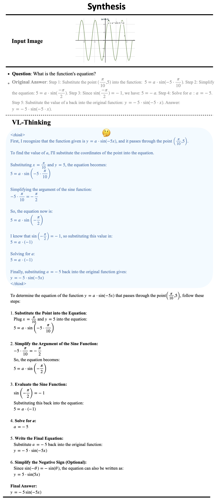
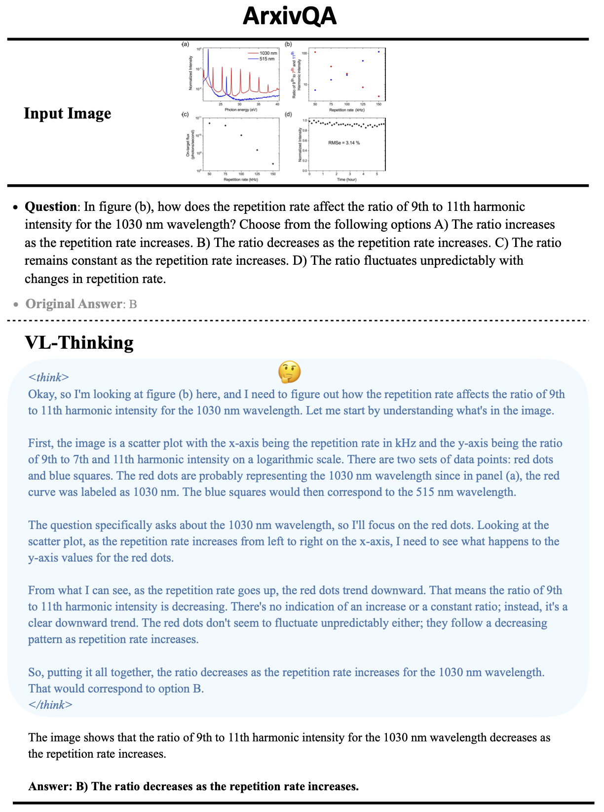
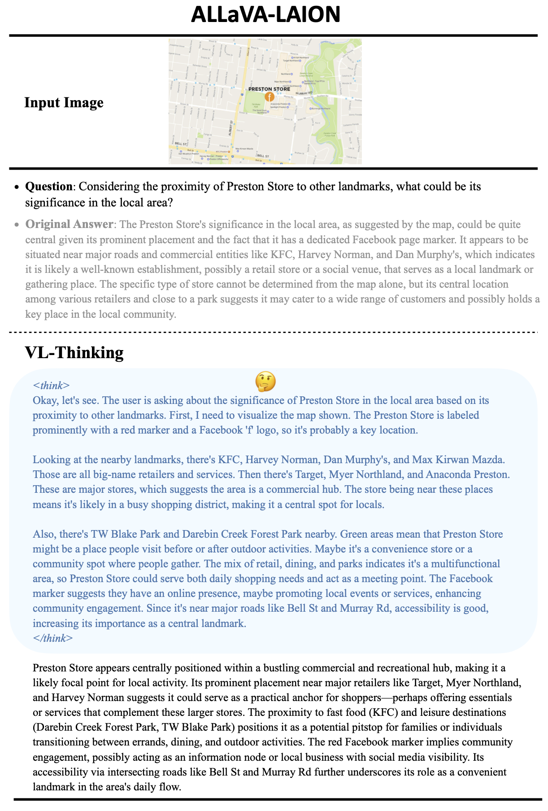
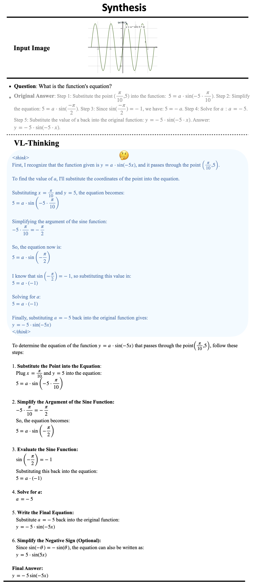
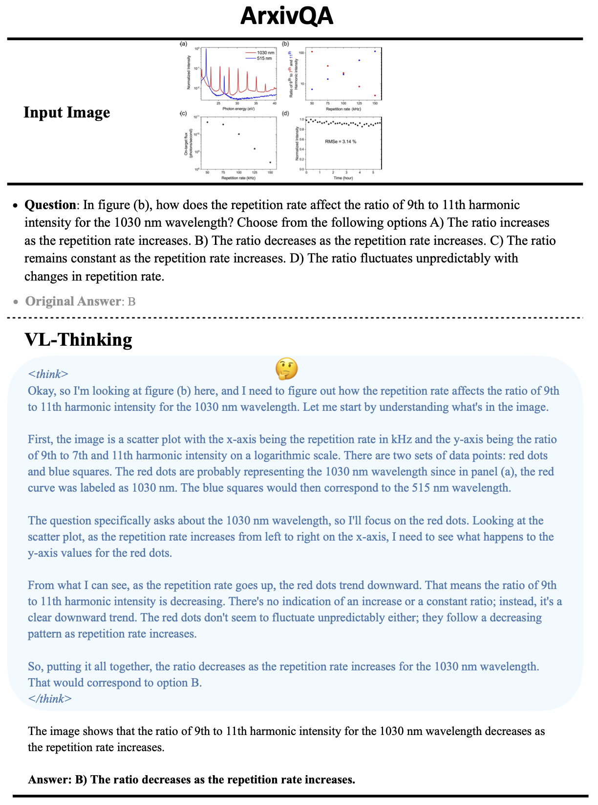
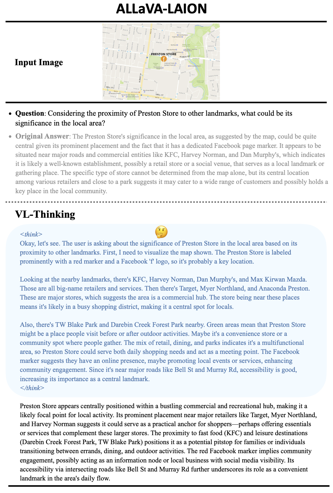

Generation Pipeline
Pipeline Overview. We propose a four-step procedure for data generation: Captioning, Visual-Language CoT Generation, Answer Rewriting and Answer Verification.
 





BibTeX
@misc{vl-thinking2025,
title={VL-Thinking: An R1-Derived Visual Instruction Tuning Dataset for Thinkable LVLMs},
author={Hardy Chen and Haoqin Tu and Hui Liu and Xianfeng Tang and Yuyin Zhou and Cihang Xie},
year = {2025},
publisher = {GitHub},
journal = {GitHub repository},
howpublished = {\url{https://github.com/UCSC-VLAA/VL-Thinking}},
}